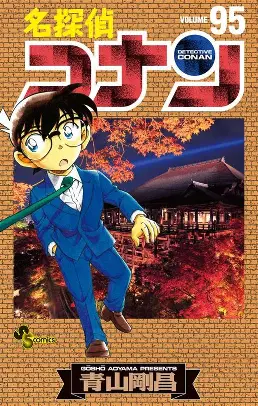

شنيتشي كودو طالب في المدرسة الثانوية يتمتع بموهبة مذهلة في العمل البوليسي، معروف بحل العديد من القضايا الصعبة. في أحد الأيام، عندما يكتشف شنيتشي رجلين مشبوهين ويقرر تعقبهما، يصبح عن غير قصد شاهداً على نشاط غير قانوني مثير للقلق. لسوء الحظ، يتم القبض عليه متلبساً، لذلك أعطاه الرجلان جرعة من عقار تجريبي صممته منظمتهم الإجرامية، وتركوه ليموت.
ومع ذلك، ولدهشته، يعيش شنيتشي ليرى يوماً آخر ولكن الآن في جسد طفل يبلغ من العمر سبع سنوات. محافظاً تماماً على ذكائه الأصلي، يخفي هويته الحقيقية عن الجميع، بما في ذلك صديقة طفولته ران موري ووالدها، المحقق الخاص كوغورو موري. ولهذا الغرض يتخذ اسم كونان إيدوجاوا المستوحى من كتاب الغموض آرثر كونان دويل ورانبو إيدوجاوا. شنيتشي، بدور كونان، يبدأ بحل قضايا موري الأكبر سراً من وراء الكواليس بمهاراته الاستثنائية في التحري، بينما يُجري تحقيقاً سرياً عن المنظمة المسؤولة عن حالته الحالية، آملاً في عكس آثار العقار يوماً ما.